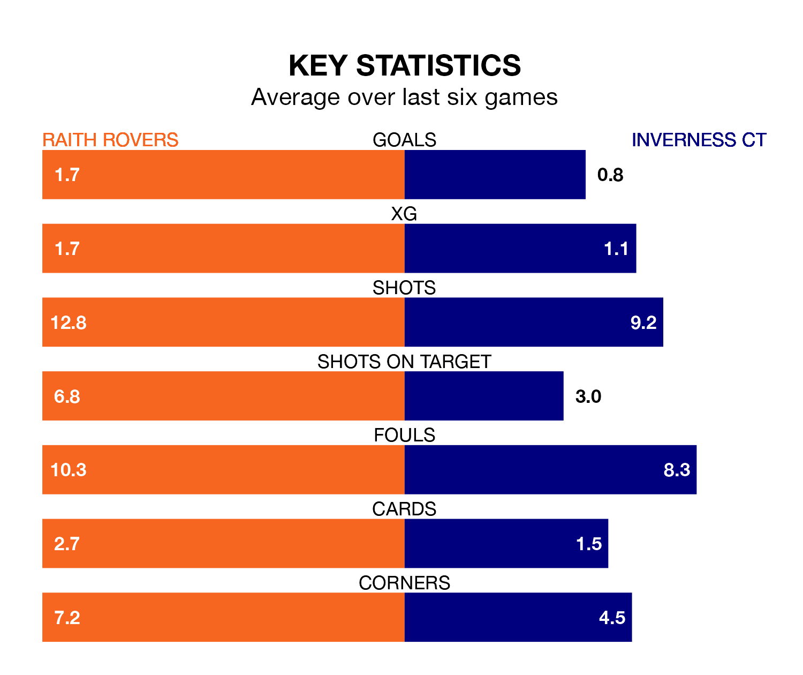

Raith Rovers host Inverness CT in Saturday's match at Stark's Park looking to bounce back from defeat last time out in the Championship.
Raith, who sit second in the league after 21 games, fell to a 2-1 home defeat to Queen's Park on January 13.
They face an Inverness CT side who also lost their last match, a 1-0 defeat to Dundee United, and who sit seventh in the table.
In Lewis Vaughan, Raith have the league's sharpest shooter so far this season. He has notched 10 goals in 21 appearances.
His goal rate of one every 143 minutes is quicker than that of Billy McKay, Inverness CT's top scorer with a goal every 266 minutes, and a total of six goals in 21 games.
With 38 goals in 21 games so far this season, Rovers are the league's third-highest scorers with 1.8 goals per game. And they are conceding fewer than average, letting in 28 goals at a rate of 1.3 per game.
ICT, meanwhile, are below average scorers, with 1.1 goals per game, compared to a league average of 1.4. They have conceded 1.2 goals per game.
In the last 10 years, Raith and Inverness CT have played each other on 17 occasions. Raith won two of them, Inverness CT eight, and they drew seven times.
On average, Raith scored 0.9 goals and ICT 1.5 in those matches.
Their last meeting was on December 2, when Raith won 2-1 away.
The home side are in mixed form in the Championship, with two wins and two draws from their last six games.
With a win and two draws over that period, the visitors' form is worse – they have taken five points from 18, compared to Raith's eight.
Updated: 09:18 (UTC), 23/01/24